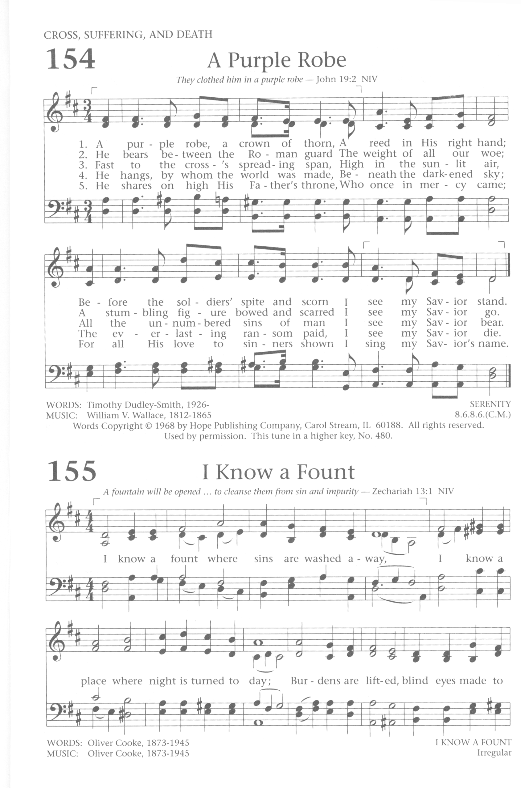

|
|
【紫袍荊冠】 |
|
1. A purple robe, a crown of thorn,
2. He bears between the Roman guard
3. Fast to the cross's spreading span,
4. He hangs, by whom the world was made,
5. He shares on high His Father's throne, |
我見耶穌親愛救主，遭受痛苦憂患， 救主被釘在十字架，高高懸在烈日下，
|
|
https://hymnary.org/hymn/BH1991/page/138
 |
|
|
|
|

世紀頌讚 171《紫袍荊冠》（導唱）https://youtu.be/b18CkGMPTxI https://youtu.be/ED5HvYEVops
| Text: | A Purple Robe |
| Author: | Timothy Dudley-Smith |
| Tune: | SERENITY |
| Composer: | William V. Wallace |
| Short Name: | Timothy Dudley-Smith |
| Full Name: | Dudley-Smith, Timothy, 1926- |
| Birth Year: | 1926 |
Timothy Dudley-Smith (b. 1926)

Educated at Pembroke College and Ridley Hall, Cambridge, Dudley-Smith has served the Church of England since his ordination in 1950. He has occupied a number of church positions, including parish priest in the diocese of Southwark (1953-1962), archdeacon of Norwich (1973-1981), and bishop of Thetford, Norfolk, from 1981 until his retirement in 1992. He also edited a Christian magazine, Crusade, which was founded after Billy Graham's 1955 London crusade. Dudley-Smith began writing comic verse while a student at Cambridge; he did not begin to write hymns until the 1960s. Many of his several hundred hymn texts have been collected in Lift Every Heart: Collected Hymns 1961-1983 (1984), Songs of Deliverance: Thirty-six New Hymns (1988), and A Voice of Singing (1993). The writer of Christian Literature and the Church (1963), Someone Who Beckons (1978), and Praying with the English Hymn Writers (1989), Dudley-Smith has also served on various editorial committees, including the committee that published Psalm Praise (1973).
https://en.wikipedia.org/wiki/Timothy_Dudley-Smith
Tune Information
| Title: | SERENITY (Wallace) |
| Composer: | William Vincent Wallace (1856) |
| Meter: | 8.6.8.6 |
| Incipit: | 33343 32225 23435 |
| Key: | E♭ Major |
| Copyright: | Public Domain |
| Short Name: | William Vincent Wallace |
| Full Name: | Wallace, William Vincent, 1812-1865 |
| Birth Year: | 1812 |
| Death Year: | 1865 |
Why Was Jesus Given a Crown of Thorns?
Pamela Palmer
| Author
2021
31 Mar
Silhouette of Jesus with a crown of thorns
Tucked away in the story of Jesus’ bloody trail to the cross is that the
soldiers who beat him wrapped him in a purple robe and placed a crown of thorns
upon his head. They gave Jesus a crown of thorns to mock him because Jesus spoke
openly to Pilate that he was a king, but his kingdom was not of this world (see
John 18:36). The soldiers meant to mock Jesus by placing a crown of thorns on
his head, but perhaps there is more to the significance of the crown of thorns.
There was nothing standard or routine about Jesus’ arrest and being sentenced to
die by crucifixion. He was an innocent man whom Pilate found no charge against
(see John 19:6). But Jesus was sentenced to death because that was the reason he
came to earth; so that he could save the world and make salvation possible for
all peoples and nations.
Symbolism and Meaning of Jesus' Crown of Thorns
Placing the crown of thorns on Jesus’ head would not have been a normal part of
crucifixion during this time. Crucifixion was used by the Romans as a
punishment. In the documentation of Jesus’ crucifixion, found within the
Gospels, a crown of thorns was placed on his head by the soldiers.
Jesus had told Pilate that his kingdom was not of this world. The soldiers
draped a purple robe around Jesus, put a crown of thorns on his head and
shouted, “Hail, King of the Jews” (see John 19:2-3). They did this to make a
mockery of Jesus and belittle him. The crown of thorns symbolized the royalty
and majesty of a king and was used as part of their futile attempts to humiliate
him. They did not realize that Jesus was offering up his own life in accordance
with the will of his Father to save the world.
Scriptures Mentioning the Crown of Thorns
Before Jesus was sentenced to be crucified, Pilate had him beaten and whipped.
Three of the four Gospels mention specifically that Jesus had a crown of thorns
put on his head by the Roman soldiers after they beat him. It is common for
details to vary across the four Gospels. Together, the four Gospels give a
detailed presentation of Jesus’ ministry and life.
Matthew 27:29 - “And after twisting together a crown of thorns, they put it on
His head, and a reed in His right hand; and they knelt down before Him and
mocked Him, saying, ‘Hail, King of the Jews!’”
Mark 15:17 - “They dressed Him up in purple, and after twisting a crown of
thorns, they put it on Him.”
John 19:2 - “And the soldiers twisted together a crown of thorns and put it on
His head and put a purple robe on Him.”
The accounts of this happening in the Gospels of Matthew, Mark, and John are
intense. One can only imagine the pain and suffering Jesus endured. The crown of
thorns that was being used as a way to hurt and mock Jesus and his claims of
being a king has instead become a powerful reminder of exactly who Jesus is and
what he went through to save the world.
Photo credit: ©Getty Images/mbolina
Why Was Jesus Humiliated before His Death?
The soldiers mocked Jesus and attempted to humiliate him as part of the
crucifixion process. Jesus had stated he was a king, and they used that
statement against him to ridicule and shame him. The soldiers slapped him and
made jokes of his claims of kingship.
Their pride, their hatred, or whatever it may have been, kept the soldiers from
recognizing who Jesus really was. For Jesus died even to cover the soldiers’
sins. This is the great love that Jesus has shown for the entire world.
Where Else Do We See Thorns in the Bible?
References to thorns are throughout the Bible, found in the Old and New
Testaments. These references affirm the negative connotation of the word and the
desolation associated with thorns.
Numbers 33:55 - “But if you do not drive out the inhabitants of the land from
before you, then it shall come about that those whom you let remain of them will
become as pricks in your eyes and as thorns in your sides, and they will trouble
you in the land in which you live.”
Hosea 9:6 - “For behold, they will go because of destruction; Egypt will gather
them up, Memphis will bury them. Weeds will take over their treasures of silver;
thorns will be in their tents.”
Matthew 7:16 - “You will know them by their fruits. Grapes are not gathered from
thorn bushes nor figs from thistles, are they?”
Hebrews 6:7-8 - “For ground that drinks the rain which often falls on it and
brings forth vegetation useful to those for whose sake it is also tilled,
receives a blessing from God; but if it yields thorns and thistles, it is
worthless and close to being cursed, and it ends up being burned.”
These are just a sampling of verses that reference thorns throughout the Bible,
but perhaps most noteworthy is the use of the word thorns in Genesis when God
spoke of the curse following the sin of Adam and Eve.
Genesis 3:17-18 - “Cursed is the ground because of you; through painful toil you
will eat food from it all the days of your life. It will produce thorns and
thistles for you.”
The consequences Adam and Eve suffered because of their sinful choice included
the ground yielding thorns and thistles. The Romans soldiers used a crown of
thorns, part of the original curse, and placed it on the head of Jesus who would
offer atonement, salvation, and hope for the entire world. Truly, this was a
powerful symbol of the sin and death that Jesus was about to deliver the world
from through his death and resurrection.
What Does the Crown of Thorns Teach Us about Who Jesus Is?
Thorns are associated with curses, death and dying, pain and sorrow, and sin.
The Roman soldiers placed a crown of thorns on the head of the one who would
take on all sin, and pain, and deliver the world from death. What the soldiers
meant as a mockery of Jesus’ claims to being a king, instead demonstrated
exactly who Jesus is.
Jesus is the King of kings. He alone is the Savior of the world. He took on the
shame, sorrows, and sins of the world to save us and redeem us. Jesus willingly
stood in our place, was nailed to the cross in our place, and paid our debt by
offering up his life according to the will of the Father. What we learn from the
crown of thorns is that Jesus’ love for humanity has no bounds, even willing to
take on desolation because he loves us and made a way for our redemption.
A Love Unlike Any Other
Jesus’ crucifixion was horrific. He endured unthinkable pain, was beaten
brutally, and died on our behalf. When we consider all that Jesus went through,
it becomes clear that the depth and breadth of his love is staggering. Truly,
Jesus’ love is unlike any other love we will experience.
The crown of thorns placed on Jesus’ head should have been what we suffered, but
Jesus took our place. Only he was worthy, and only he could serve as the
unblemished lamb sent to die a death that would redeem the world. Though meant
to taunt and embarrass Jesus, the crown of thorns was actually a radical symbol
of who Jesus is, both Savior and King.
告诉我，我的灵魂 - Tell Out, My Soul
告诉我，我的灵魂
类型 圣歌
文本 蒂莫西·达德利·史密斯（Timothy Dudley-Smith）
基于 路加福音1：46-55
仪表 10.10.10.10
旋律 “林地” 沃尔特·格里奥雷克斯（Walter Greatorex）
“告诉我，我的灵魂” 是一个 基督教 圣歌 解释 壮丽的，由撰写 蒂莫西·达德利·史密斯（Timothy Dudley-Smith）
于1962年流行。 赞美诗 林地 由...组成 沃尔特·格里奥雷克斯（Walter Greatorex） 在1916年。[1]
内容
1 历史
2 音乐环境
3 参考
4 外部链接
历史
蒂莫西·达德利·史密斯（Timothy Dudley-Smith）于1961年5月写下赞美诗，当时他和他的妻子刚搬进了他们在纽约的第一所房子
布莱克希思。当他在阅读《摩纳哥大辞典》的现代释义时，他受到启发去写这段文字。 路加福音1：46–55 在里面
新英文圣经，以“告诉我，我的灵魂，主的伟大”开头的翻译。[2][3]
达德利·史密斯（Dudley-Smith）在2006年的一次采访中同意，赞美诗是“就他的赞美诗发表而言的重要起点”。[4]
赞美诗已被包括在许多赞美诗中，其中 新英语赞美诗.[5] 它已被包括在宗教广播电视节目中，包括 星期天崇拜 上 英国广播公司电台4 和 赞美之歌.[6][7]
在2013年的调查中，英国广播公司（BBC）进行的“英国前100首赞美诗” 赞美之歌，“脱口秀出，我的灵魂”与“我的上帝，更接近你",
帕特里克·阿普尔福德（Patrick Appleford）的“主耶稣基督”（“活着的主”）和“心里给我欢乐".[8]
音乐环境
“告诉我，我的灵魂”
Greatorex赞美诗曲选 林地
播放此文件时遇到问题？看 媒体帮助.
“告诉我，我的灵魂”适合 仪表 10.10.10.10，最初发布于1965年， 圣公会赞美诗集，设置为调 短讯 经过 威廉·勒韦林。 1966年，圣诗集被收录在
福音圣公会 赞美诗 青年赞美，设置为 迈克尔·鲍恩（Michael Baughen）, 前进.[9] 文本后来与现有的赞美诗曲调配对 林地，由
沃尔特·格里奥雷克斯（Walter Greatorex） 在1916年
亨利·蒙塔古·巴特勒1881年的赞美诗振作起来！“。“脱口秀出，我的灵魂”现在最受欢迎地演唱了Greatorex的旋律。[10][3][11]
https://wikichi.icu/wiki/Tell_Out,_My_Soul